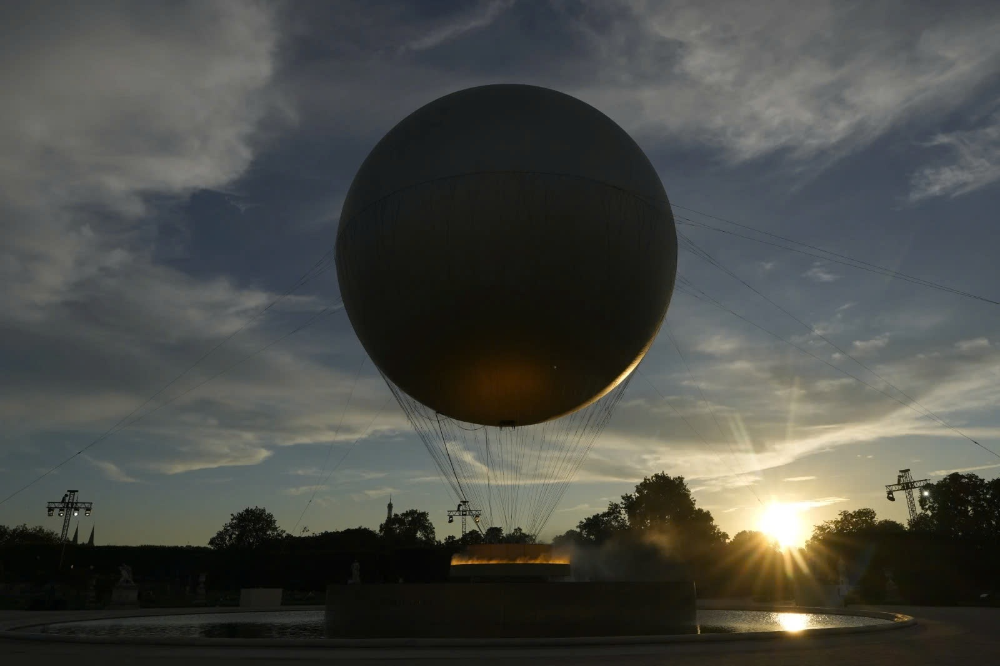

Pháp Lễ bế mạc Olympic 2024 kết thúc muộn hơn một tiếng so với dự kiến, với hình ảnh tài tử Tom Cruise nhảy từ nóc sân xuống đất gây chú ý. Chiếc vạc là một quả cầu lửa lớn từng gây chú ý trong lễ khai mạc , bay cao trên vườn Tuileries suốt 15 ngày thi chính thức, trước hạ cánh xuống mặt đất vào ngày 11/8.
Pháp Lễ bế mạc Olympic 2024 kết thúc muộn hơn một tiếng so với dự kiến, với hình ảnh tài tử Tom Cruise nhảy từ nóc sân xuống đất gây chú ý. Chiếc vạc là một quả cầu lửa lớn từng gây chú ý trong lễ khai mạc , bay cao trên vườn Tuileries suốt 15 ngày thi chính thức, trước hạ cánh xuống mặt đất vào ngày 11/8.

Khung cảnh trước lễ bế mạc là hình ảnh vạc giữ lửa dần tắt, đúng lúc mặt trời chuẩn bị lặn ở Paris, kết thúc 19 ngày của Thế vận hội 2024.
Chiếc vạc là một quả cầu lửa lớn từng gây chú ý trong lễ khai mạc, bay cao trên vườn Tuileries suốt 15 ngày thi chính thức, trước hạ cánh xuống mặt đất vào ngày 11/8.